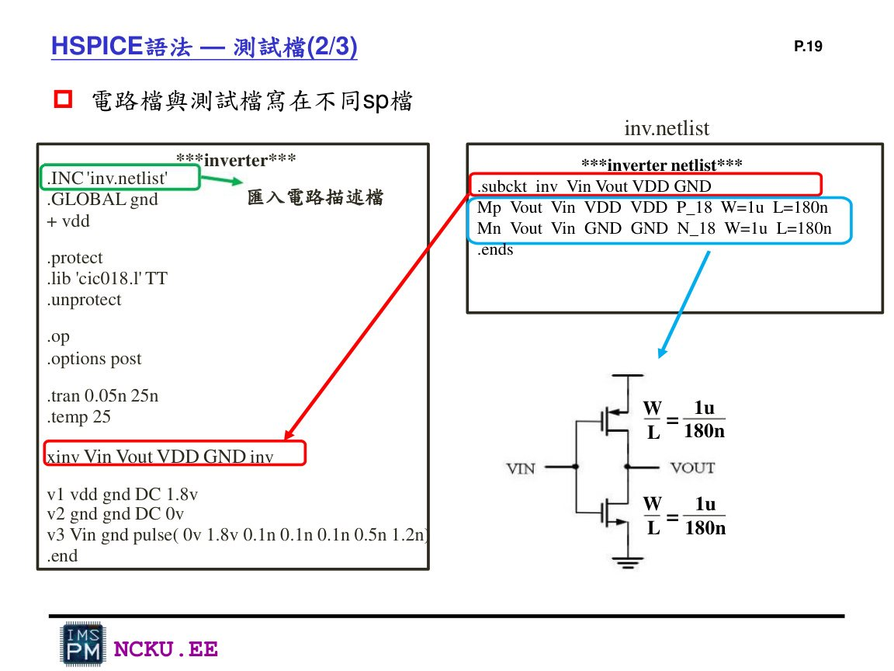
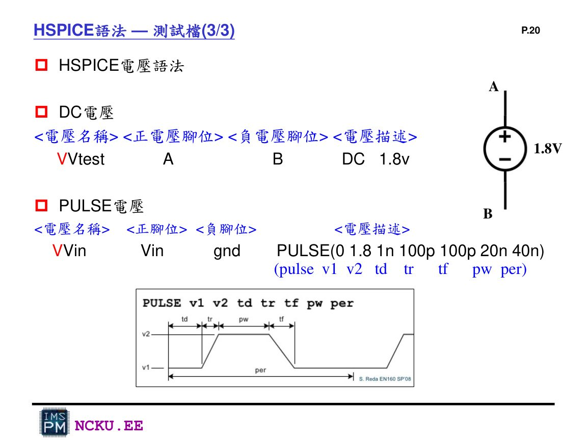
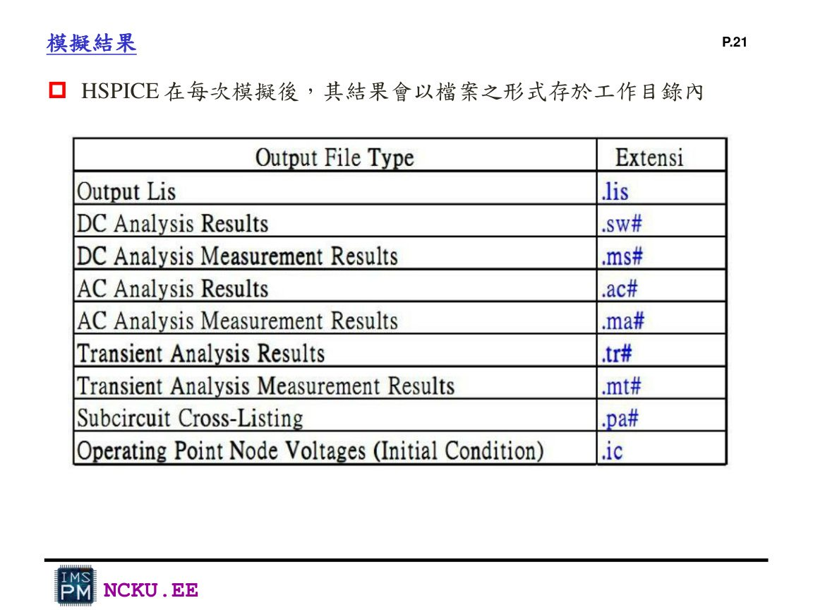
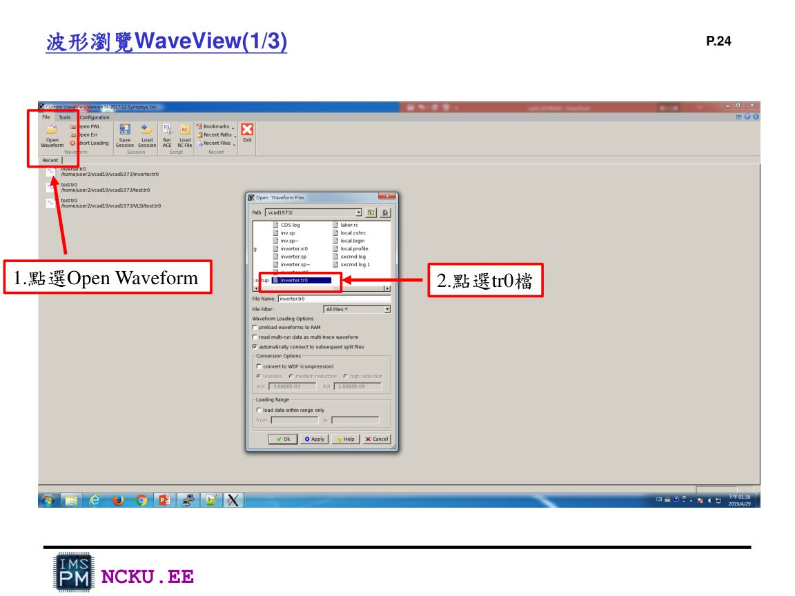
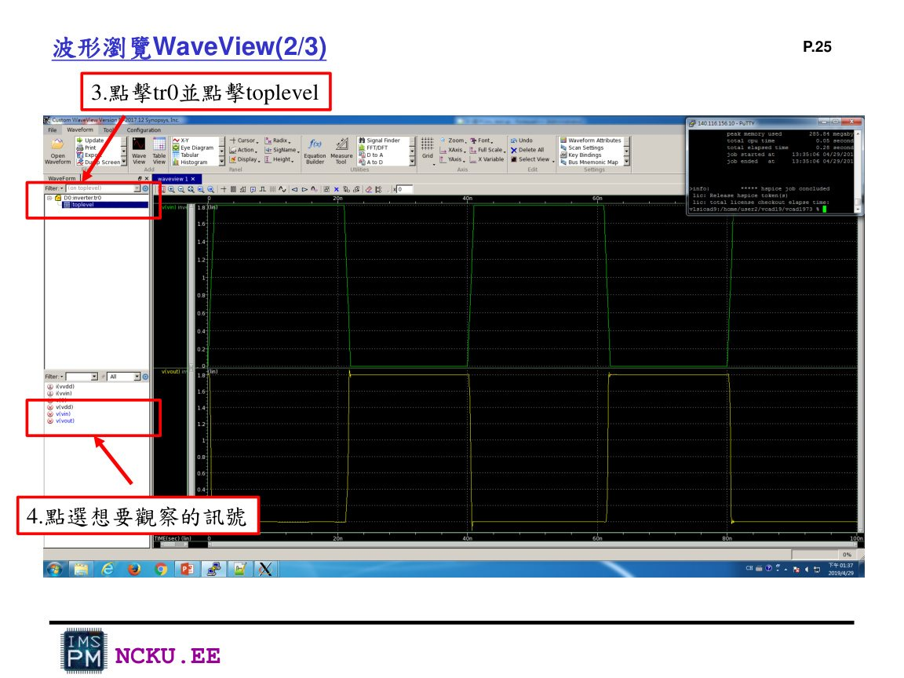
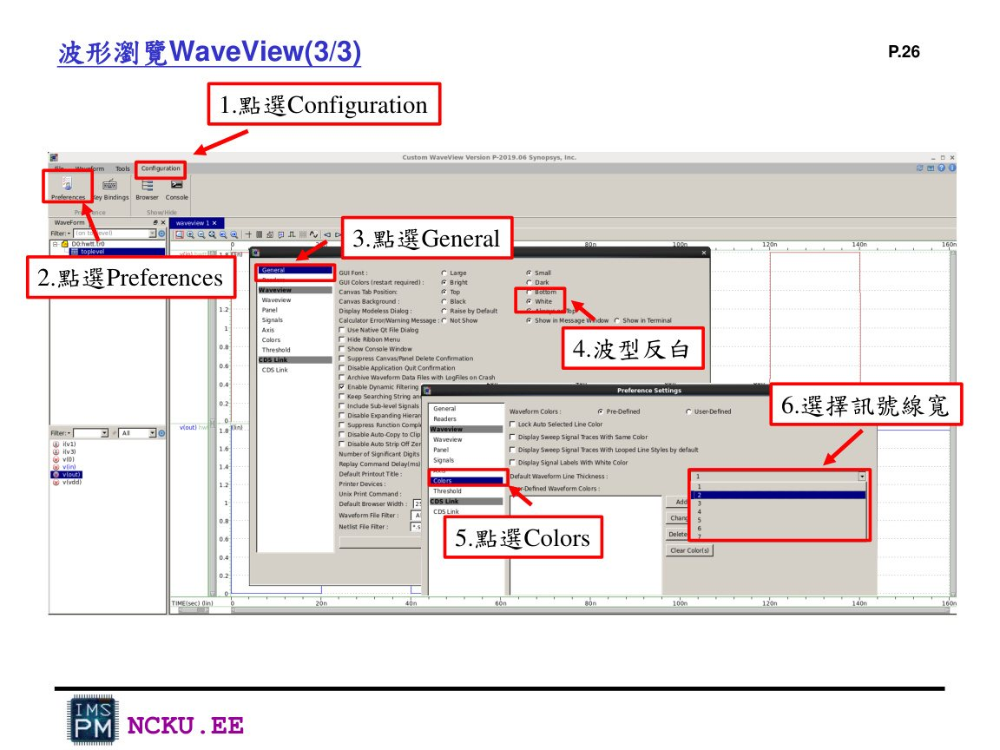

circuit.spi、testbench.sp 與 WaveView 波形判讀
本頁提供可直接修改使用的範例程式碼，並說明怎麼跑 HSPICE 與怎麼判斷輸入輸出波形。
一、HSPICE 語法核心

Lab8 講義示範：電路檔與測試檔分開，testbench 透過 .INC 匯入 netlist。

PULSE 電壓格式：v1、v2、td、tr、tf、pw、per。
注意：`.subckt` 結束要用 `.ends`；整份 testbench 結束要用 `.end`。`.lib` 的 cic018 路徑要依你工作站資料夾調整。
二、circuit.spi 範例
*========================================================
* circuit.spi - Lab8 / Lab9 pre-sim source netlist
* CMOS gates in TSRI CIC 0.18um virtual process
*========================================================
*---------------------
* Inverter
* pins: in out_1 VDD GND
*---------------------
.subckt inv in out_1 VDD GND
MP_inv out_1 in VDD VDD p_18 W=1u L=0.18u
MN_inv out_1 in GND GND n_18 W=0.5u L=0.18u
.ends inv
*---------------------
* 2-input NAND
* PMOS parallel, NMOS series
* pins: A B out_2 VDD GND
*---------------------
.subckt nand A B out_2 VDD GND
MP_nand_A out_2 A VDD VDD p_18 W=1u L=0.18u
MP_nand_B out_2 B VDD VDD p_18 W=1u L=0.18u
MN_nand_A out_2 A n_mid GND n_18 W=0.5u L=0.18u
MN_nand_B n_mid B GND GND n_18 W=0.5u L=0.18u
.ends nand
*---------------------
* 2-input NOR
* PMOS series, NMOS parallel
* pins: C D out_3 VDD GND
*---------------------
.subckt nor C D out_3 VDD GND
MP_nor_C p_mid C VDD VDD p_18 W=1u L=0.18u
MP_nor_D out_3 D p_mid VDD p_18 W=1u L=0.18u
MN_nor_C out_3 C GND GND n_18 W=0.5u L=0.18u
MN_nor_D out_3 D GND GND n_18 W=0.5u L=0.18u
.ends nor
三、testbench.sp 範例
*========================================================
* testbench.sp - Lab8 pre-simulation testbench
*========================================================
.INC 'circuit.spi'
.GLOBAL gnd
+ vdd
.protect
.lib './cic018/model/cic018.l' TT
.unprotect
.op
.options post
.temp 25
.tran 0.05n 160n
* Power
VDD vdd gnd DC 1.8v
VGND gnd 0 DC 0v
* Input patterns
Vin in gnd PULSE(0 1.8 0 0.1n 0.1n 20n 40n)
VA A gnd PULSE(0 1.8 0 0.1n 0.1n 20n 40n)
VB B gnd PULSE(0 1.8 0 0.1n 0.1n 40n 80n)
VC C gnd PULSE(0 1.8 0 0.1n 0.1n 20n 40n)
VD D gnd PULSE(0 1.8 0 0.1n 0.1n 40n 80n)
* DUTs
XINV in out_1 vdd gnd inv
XNAND A B out_2 vdd gnd nand
XNOR C D out_3 vdd gnd nor
.end
四、執行與輸出檔案
執行 HSPICE
hspice testbench.sp -o result.lis
看到 job concluded 代表成功。看到 job aborted 要回去看 .lis 錯誤。

HSPICE 每次模擬會產生 .lis、.tr0 等結果檔；WaveView 主要讀 .tr0。
五、WaveView 看波形

WaveView：Open Waveform，選擇 .tr0 檔。

點 tr0 / toplevel，選擇要看的訊號。

可把波形背景改亮、線加粗，截圖更清楚。
六、波形判斷
| 電路 | 正確波形特徵 | 報告要說明 |
|---|---|---|
| Inverter | in 高時 out_1 低；in 低時 out_1 高 | 輸出為輸入反相 |
| NAND | A、B 同時為高時 out_2 才拉低 | PMOS 並聯、NMOS 串聯造成 NAND 邏輯 |
| NOR | C、D 同時為低時 out_3 才拉高 | PMOS 串聯、NMOS 並聯造成 NOR 邏輯 |